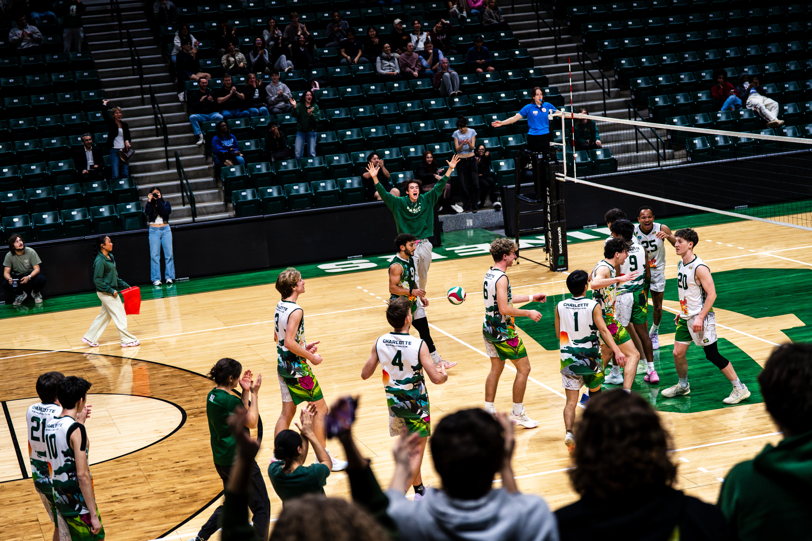
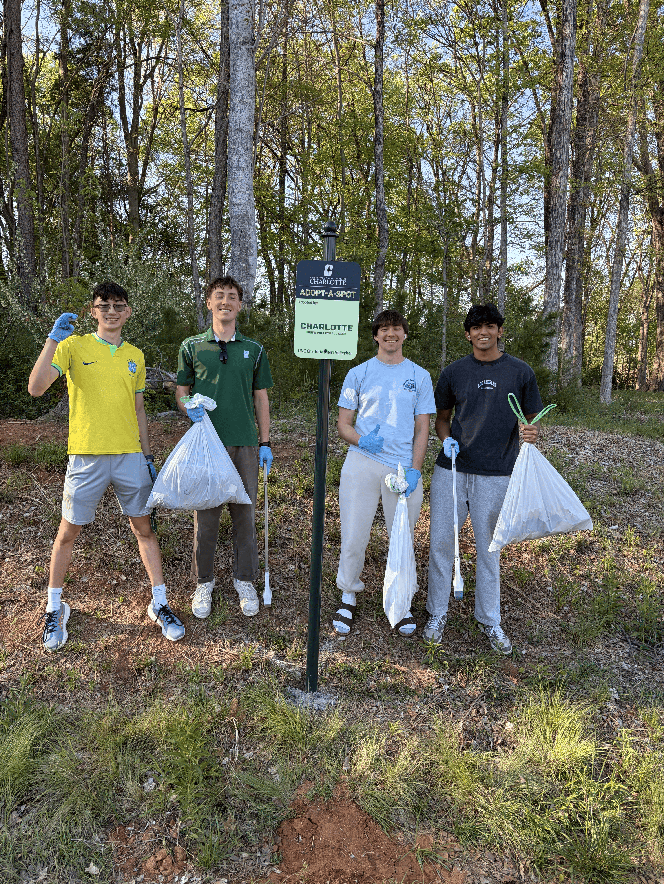
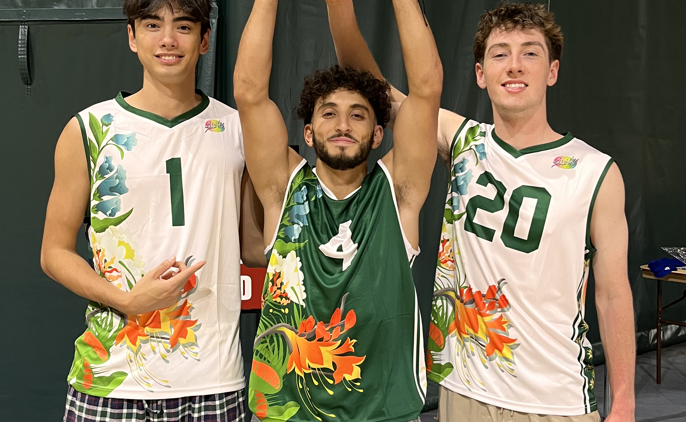
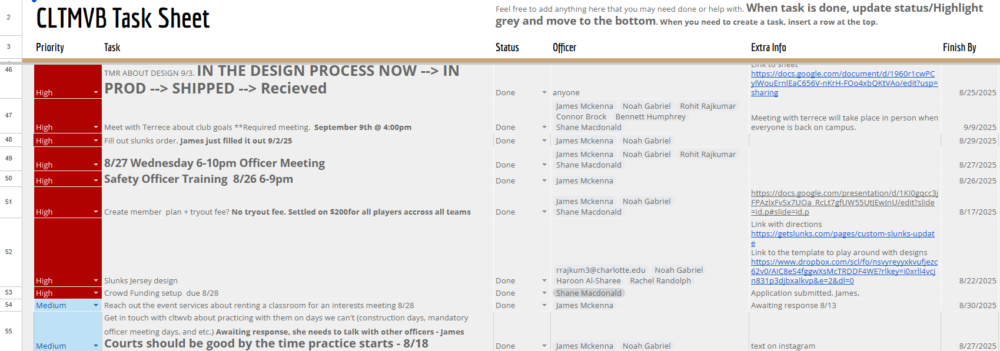
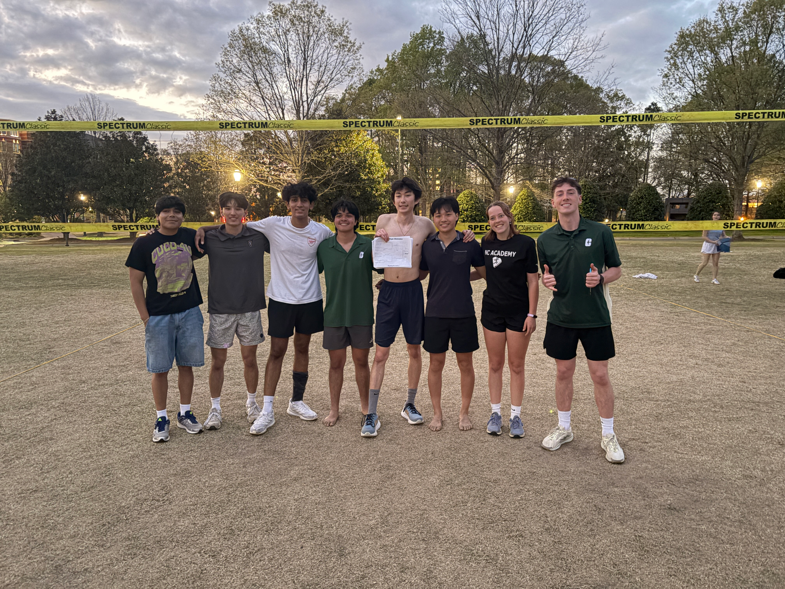
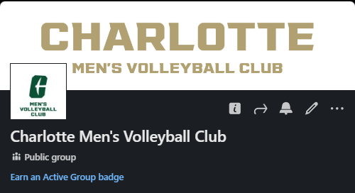

Volleyball
Clips from my senior season at UNC Charlotte as team captain
Impact
Coordinated the first Men's Volleyball Club Match in the Halton Arena
This had been a dream of mine since my freshman year. It took four years of networking and building the skills needed to coordinate such an event. We had a turnout of around 175+ people that were players, spectators, and students coming in and out. We ended up defeating APP State in the 5th set.

Adopt-A-Spot
Through UNC Charlotte’s Adopt-A-Spot program, I applied on behalf of the Men’s Volleyball Club and was accepted to receive a designated area on campus marked with a sign displaying our club name. As part of the program, we clean and maintain the spot and its surrounding area twice each semester.

Landed a vendor deal for new jerseys
Securing new jersey kits was always one of my goals for the club. In previous years, we relied on local vendors that were unable to provide the quality and consistency we needed. I reached out to a top volleyball apparel provider, Slunks, and worked directly with both the company and UNC Charlotte’s compliance team to secure a campus-approved vendor deal.

Club Operations
While serving as club president, one of my main priorities was ensuring that each of my 8 officers was involved, informed, and clear on their responsibilities. To improve organization, I created a user-friendly task sheet that helped track club operations, delegate tasks, and keep the leadership team accountable.

Collaboration Events
I helped organize and host grass volleyball tournaments on campus to bring students together. I coordinated with student organization leaders, created group chats for event logistics, helped film promotional content, delegated responsibilities to my club officers, and supported day-of operations. These tournaments became a meaningful way to grow the volleyball community on campus, and I am proud to have helped build a tradition that can continue after I graduate.

Member Development
Throughout my senior year, I focused heavily on member development. This was my way of preparing all of the underclassmen for internships and jobs. I helped review resumes and provided any professional guidance I had obtained. I created a LinkedIn group for club members to join to stay connected post-college.
